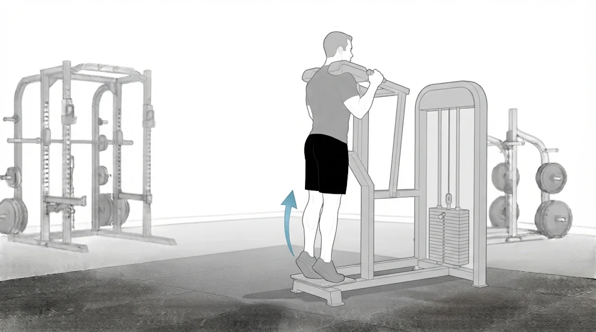
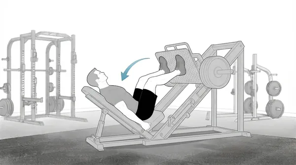
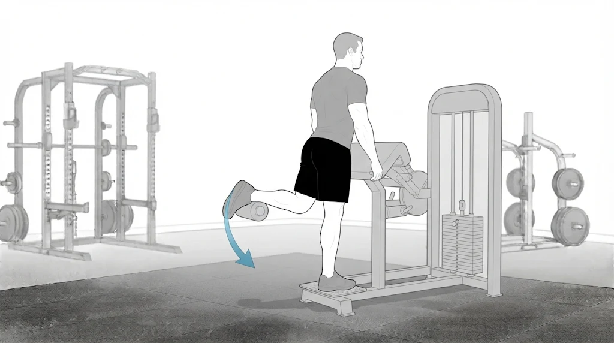

Calf raises

Stand on the machine, shoulders under the pads, balls of your feet on the step, heels hanging off.
1. Rise onto your toes as high as possible, squeezing your calves.
2. Slowly lower until you feel the stretch, heels below the level of the step.
Variation: on a step with a dumbbell in one hand, one leg at a time.
Tip: keep your knees straight but not locked, and pause at the top of the movement.
Incline leg press

Lie on the leg press seat, back and head flat, feet shoulder-width apart on the platform.
1. Release the weight, then bend your knees to lower the platform towards your chest.
2. Push through your heels until your legs are almost straight.
Variation: feet placed higher on the platform to target the glutes and hamstrings more.
Tip: never lock your knees at the top, and keep your lower back against the backrest.
Squat

Stand with your feet shoulder-width apart, bar resting on your upper back (traps).
1. Push your hips back and bend your knees to lower yourself until your thighs are parallel to the floor.
2. Push through your heels to stand back up.
Variation: on a Smith machine, more stable for beginners.
Tip: back straight, eyes forward, and knees in line with your toes.
Kickback

Stand facing the machine, hands on the handles, with the heel of one leg against the pad.
1. Push your leg back while squeezing your glute, without arching your back.
2. Slowly return to the starting position, then switch legs.
Variation: on the low pulley with an ankle strap.
Tip: your hips stay still, only your leg moves.